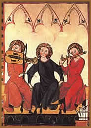

Poucas vezes o Homem teve a sua
existência tão marcada pela espiritualidade quanto
na Idade Média, e poucas vezes foi tão feliz ao
tentar imprimir na arte os sinais do invisível. Para os
historiadores, não é tarefa fácil tentar
determinar o período de início e fim da Idade Média,
mas as propostas mais aceitas situam essa era da História
entre a queda da Civilização Romana no século
V, e o século XV, do Renascimento Humanista. Se aceitarmos
essa hipótese, poderíamos dizer que a música
medieval, em tese, acompanha essa cronologia e que foi produzida
por praticamente mil anos. Assim, ela nasceria com as primeiras
manifestações artísticas de uma nova cultura,
fundamentada na síntese das sociedades romana e germânica,
ambas articuladas pela Igreja.
A
crise dessa sociedade marcaria também o declínio
da música medieval. Comparável aos documentos históricos
medievais em geral, o corpo de peças musicais do período
aumenta à medida que se aproxima o seu fim. Tal fato relaciona-se
principalmente ao desen-volvimento dos sistemas de notação
musical (portanto é uma questão de registro, não
devendo se confundir com um retrato da intensidade da prática
musical vigente).
O surgimento e desenvolvimento da polifonia escrita
e das primeiras notações musicais no Ocidente deram-se
na Idade Média. Freqüentemente, o caráter litúrgico
ou paralitúrgico e festivo ligam a música aos ritos
religiosos (a exemplo do cantochão e do calendário
gregoriano), ou àqueles de reminiscência pagã
(como as festas da chegada da Primavera).
É também nessa era que o amor profano
se expressa em todo seu refinamento na arte dos trovadores e que
a monofonia atinge a maturidade no Ocidente.
O período da música medieval é
marcado pela estrutura modal praticada nas himnodias e salmodias,
no canto gregoriano, nos organuns polifônicos, nas composições
polifônicas da Escola de Notre-Dame, na Ars Antiqua e Ars
Nova e ainda na música dos trovadores e troveiros.
Música
Modal
A música modal se caracteriza pela importância
dada às combinações entre as notas e a seus
resultados sonoros particulares. De acordo com a função
e o texto cantado, o compositor usa um modo escalar diferente.
O fundamento da música modal é a composição
melódica, seja em uma monodia (uma só melodia) ou
em uma polifonia (mais de uma melodia, simultâneas).
Himnodias e Salmodias
A música erudita no ocidente começa
com a proliferação das comunidades cristãs,
entre os séculos I e VI. Suas fontes são a música
judaica (os Salmos) e a música helênica sobrevivente
na antiga Roma. As principais formas musicais são as salmodias,
cantos de Salmos ou parte de Salmos da Bíblia, e himnodias,
cantos realizados sobre textos novos, cantados numa única
linha melódica, sem acompanhamento. A música não
dispõe, então, de uma notação precisa.
São utilizados signos fonéticos acompanhados de
neumas, que indicam a movimentação melódica.
Monodia Gregoriana
A rápida expansão do cristianismo
exige um maior rigor do Vaticano, que unifica a prática
litúrgica romana no século VI. O papa Gregório
I (São Gregório, o Magno) institucionaliza o canto
gregoriano, que se torna modelo para a Europa católica.
A notação musical sofre transformações,
e os neumas são substituídos pelo sistema de notação
com linhas. O mais conhecido é o de Guido d'Arezzo (995?
1050?). No século XI, ele designa as notas musicais como
são conhecidas atualmente: ut (mais tarde chamada
dó), ré, mi, fá, sol, lá,
si.
Música
polifônica
Os sistemas de notação impulsionam
a música polifônica, já em prática
na época como a música enchiriades, descrita em
tratado musical do século IX, que introduz o canto paralelo
em quintas (dó-sol), quartas (dó-fá) e oitavas
(dó-dó). É designado organum paralelo e no
século XII cede espaço ao organum polifônico,
no qual as vozes não são mais paralelas e sim independentes
umas das outras.
Escola de Notre-Dame
A prática polifônica dá um
salto com a música desenvolvida por compositores que atuam
junto à Catedral de Notre-Dame. Eles dispõem de
uma notação musical evoluída, em que não
só as notas vêm grafadas, mas também os ritmos
a duração em que cada nota deve soar. Mestre Leonin
e Perotin, o Grande, são os dois principais compositores
dessa escola, entre 1180 e 1230. Ambos, em seu modo de composição
rítmica, além da elaboração de vozes
novas sobre organuns dados, se abrem para composições
autônomas. Abandonam o fluxo rítmico do texto religioso,
obedecido no canto gregoriano, em troca de divisões racionais,
criando a base para escolas futuras.
Ars Antiqua
Desenvolve-se entre 1240 e 1325, e suas formas
musicais perduram até o fim da Idade Média: o conductus,
o moteto, o hoqueto e o rondeau. O moteto é composto a
partir de textos gregorianos que recebem um segundo texto, independente
e silábico, cada vogal corresponde a uma nota, seja esta
repetição ou não da antecedente. Essa necessidade
de cantar cada vogal num novo som impulsiona a notação
rítmica. Os motetos que mais se destacam são realizados
com textos profanos sobre organuns católicos.
Ars Nova
De 1320 a 1380 impera a Ars Nova, denominação
de um tratado musical do compositor Philippe de Vitry. O organum
e o conductos desaparecem, e o moteto trata de amor, política
e questões sociais. Variados recursos técnicos são
utilizados para dar uniformidade às diversas vozes da polifonia:
as linhas melódicas são comprimidas ou ampliadas
e muitas vezes sofrem um processo de inversão (sendo lidas
de trás para diante).
Guillaume de Machaut é o grande mestre desse
período. Utiliza, com precisão, recursos como os
baixos contínuos e a isoritmia – relação
de proporcionalidade entre todas as linhas melódicas da
polifonia, possibilitando que as vozes se desenvolvam sobre uma
única base rítmica.
Música Profana
A atividade de compositores profanos, como os minnesangers
e os meistersangers germânicos e os trovadores e troveiros
franceses, é intensa entre os séculos XII e XIII.
Os trovadores da Provença, ao sul da França, e os
troveiros, ao norte, exercem forte influência na música
e poesia medievais da Europa. Suas músicas de cunho popular,
em dialetos franceses, enfatizavam aforismos políticos
(como no compositor-poeta Marcabru), canções de
amor (Arnaud Daniel, Jofre Rudel e Bernard de Ventadour), albas,
canções de cruzadas, lamentações,
duelos poético-musicais e baladas. As bases para suas melodias
são os modos gregorianos, porém de ritmo marcado
e dançante, com traços da música de origem
moçárabe do mediterrâneo.
Adam de la Halle (1237-1287) troveiro francês,
menestrel da corte de Roberto II de Arras, a quem acompanha em
viagens a Nápoles. Trata seus poemas em composições
musicais polifônicas, como os 16 rondós a três
vozes e 18 jeu partis (jogos repartidos), em que se destacam o
Jogo de Robin e Marion e o Jogo da folha, que
podem ser classificados como as primeiras operetas francesas.
Instrumentos
da Idade Média
Flauta Reta
As flautas retas englobam as flautas doces (flauta
de oito furos, um deles na parte posterior destinado ao polegar)
e as flautas de seis furos com agudos feitos através de
harmônicos, já que não possuem o furo posterior.
É classificado na Idade Média como instrumento de
som suave, baixo, diferenciado-se dos instrumentos altos, como
as bombardas.
Flauta Transversal
Presente em Bizâncio pelo menos desde o século
XI, é pela primeira vez representada no manuscrito d’Herrade
de Landsberg. Os estudiosos dos instrumentos do período
estão de acordo em afirmar que a flauta transversal, bem
como as flautas retas, tinham formato cilíndrico
Cornamusa
Instrumento de sopro que consiste de um chalumeau
melódico dotado de palheta dupla e inserido em um reservatório
de pele hermético (odre ou saco). O ar entra no odre através
de um tubo superior, com uma válvula para impedir o seu
retorno. Na Idade Média este instrumento podia ou não
ter um bordão
Viela de Arco
Os instrumentos de cordas friccionadas da Idade
Média, chamados Vièle, Fiddle, Giga e Lira,
começaram a ser utilizados no século X, quando o
arco surge na Europa (introduzido provavelmente pelos árabes).
A Viela de arco pode ter formas bastante diversas e apresenta
normalmente de três a cinco cordas. Pode ser tocada apoiada
no ombro ou no joelho.
Viela de Roda ou Symphonia
É uma espécie de Viela em que o arco
é substituído por uma roda, que fricciona as cordas
sob a ação de uma manivela. As cordas são
encurtadas não diretamente pelos dedos, mas através
de um teclado.
Alaúde
O Alaúde, na forma que a Renascença
tornou famosa, só foi introduzido na Europa no século
XII, pelos mouros, com seu nome árabe (Al’ud,
que se tornou Laud na Espanha, depois Luth na
França). No fim do século XIV, adquiriu aspecto
característico com caixa piriforme composta de lados de
sicônomoro e o cravelhal recurvado para trás.
Harpa
As harpas são reconhecidas por sua forma
aproximadamente triangular e pelas cordas de comprimentos desiguais
estendidas num plano perpendicular ao corpo sonoro. As cordas
são presas por cravelhas, que podem variar de sete a vinte
e cinco. A pequena Harpa portátil veio sem dúvida
da Irlanda, com a chegada dos monges irlandeses (a Harpa é
o emblema heráldico deste país).
Percussão
Antes do século XII, praticamente não
existiam, a exceção dos jogos de sinos (Cymbala)
empregados nos mosteiros. Só nos séculos XII e XIII
aparecem na Europa provenientes provavelmente do Oriente, os tambores
de dois couros, o pequeno tambor em armação, que
por vezes era dotado de soalhas (pandeiro), címbalos
de dedos, etc.
Flauta e Tambor
Flauta de três furos tocada com uma das mãos
enquanto a outra toca o tambor que é sustentado no ombro
ou debaixo do braço pelo mesmo executante. Animava todas
as danças e festividades e o seu auge foi entre os séculos
XV e XVI. Este instrumento é até hoje presente em
algumas tradições no sul da França e no País
Basco. Taborin é o nome dado ao executante.
Flauta Dupla
Os instrumentos de sopro duplos são conhecidos
desde a Antigüidade. A flauta dupla foi um instrumento bastante
utilizado e desapareceria somente no século XVI.
Rabeca
Instrumento de cordas friccionadas com caixa monóxila,
isto é, escavada em uma só peça de madeira.
As formas variavam entre as ovais, elípticas ou retangulares.
De proporções menores do que a viela de arco tem
um som agudo e penetrante.
Saltério
Aparece no século XII numa escultura da
catedral de Santiago de Compostela. Neste instrumento as cordas
são estendidas em todo o seu comprimento acima da caixa
de ressonância, ao contrário do princípio
da harpa. É tocado pinçando-se as cordas com os
dedos ou com plectro.
Organetto ou Portativo
Bizâncio foi o primeiro centro de construção
de órgãos da Idade Média. O Organetto é
o antecessor da Gaita de Fole escocesa. Também
chamado de Portativo, porque podia ser carregado pelo
executante.
Bibliografia: